Customer Community Network Detection.
Business Understanding
As marketers, we often fall into the trap of trying to please everyone. This is a massive mistake that can end in disaster. What if there was a way to customize products to a specific group of people and have them go viral?
- Understanding the strength of the relationship and which customers are more important to analyze.
- How to use Network Analysis to identify the most influential customer networks within your customer-base. It’s then easy to cater products to them. The result is that products are much more likely to go viral!
- Increase your customer segmentation explainability
Network Analysis
Community Detection
Community Detection is one of the fundamental problems in network analysis, where the goal is to find groups of nodes that are, in some sense, more similar to each other than to the other nodes.
Communities or clusters are usually groups of vertices having higher probability of being connected to each other than to members of other groups.
Network Types
There are two types of network Analysis:
- Undirected Strength of Relationship
- Directed Hierarchical Structure
I will be using Undirected (Strength of Relationship) for Clustering.
Preparations
Load libraries
library(tidyverse)
library(tidyquant)
# EDA
library(DataExplorer)
library(correlationfunnel)
# Pre-processing
library(recipes)
# Network Analysis
library(tidygraph)
library(ggraph)
library(knitr)Data
credit_card_tbl <- read_csv("data/CC GENERAL.csv")Glimpse
credit_card_tbl %>% glimpse()## Rows: 8,950
## Columns: 18
## $ CUST_ID <chr> "C10001", "C10002", "C10003", "C10...
## $ BALANCE <dbl> 40.90075, 3202.46742, 2495.14886, ...
## $ BALANCE_FREQUENCY <dbl> 0.818182, 0.909091, 1.000000, 0.63...
## $ PURCHASES <dbl> 95.40, 0.00, 773.17, 1499.00, 16.0...
## $ ONEOFF_PURCHASES <dbl> 0.00, 0.00, 773.17, 1499.00, 16.00...
## $ INSTALLMENTS_PURCHASES <dbl> 95.40, 0.00, 0.00, 0.00, 0.00, 133...
## $ CASH_ADVANCE <dbl> 0.0000, 6442.9455, 0.0000, 205.788...
## $ PURCHASES_FREQUENCY <dbl> 0.166667, 0.000000, 1.000000, 0.08...
## $ ONEOFF_PURCHASES_FREQUENCY <dbl> 0.000000, 0.000000, 1.000000, 0.08...
## $ PURCHASES_INSTALLMENTS_FREQUENCY <dbl> 0.083333, 0.000000, 0.000000, 0.00...
## $ CASH_ADVANCE_FREQUENCY <dbl> 0.000000, 0.250000, 0.000000, 0.08...
## $ CASH_ADVANCE_TRX <dbl> 0, 4, 0, 1, 0, 0, 0, 0, 0, 0, 0, 0...
## $ PURCHASES_TRX <dbl> 2, 0, 12, 1, 1, 8, 64, 12, 5, 3, 1...
## $ CREDIT_LIMIT <dbl> 1000, 7000, 7500, 7500, 1200, 1800...
## $ PAYMENTS <dbl> 201.8021, 4103.0326, 622.0667, 0.0...
## $ MINIMUM_PAYMENTS <dbl> 139.50979, 1072.34022, 627.28479, ...
## $ PRC_FULL_PAYMENT <dbl> 0.000000, 0.222222, 0.000000, 0.00...
## $ TENURE <dbl> 12, 12, 12, 12, 12, 12, 12, 12, 12...Customer Segmentation Workflow

Exploratory Data Analysis (EDA)
plot_missing(credit_card_tbl)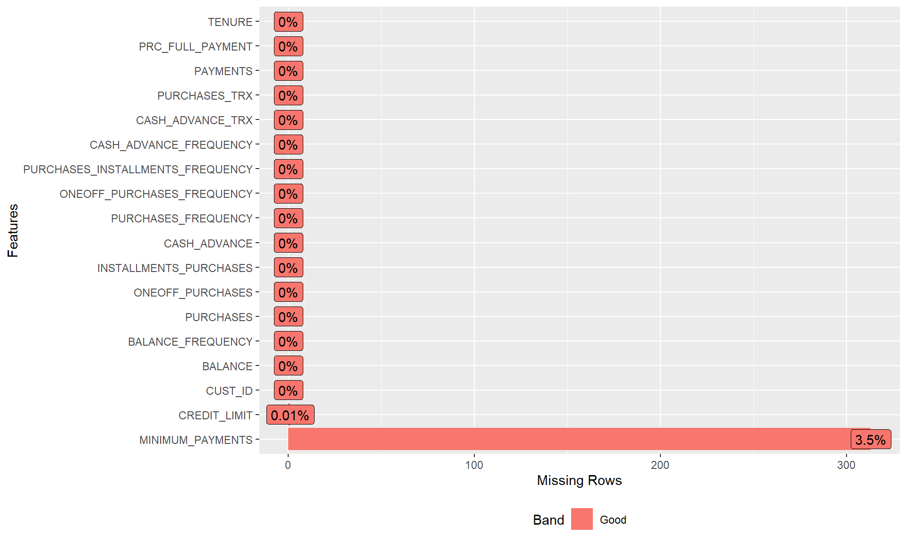
Missing Data
Minimum Payments
Minimum Payments has NA (missing data)
# Quantile
credit_card_tbl %>%
pull(MINIMUM_PAYMENTS) %>%
quantile(na.rm = TRUE)## 0% 25% 50% 75% 100%
## 0.019163 169.123707 312.343947 825.485459 76406.207520Correlation Funnel
# Filter all non-missing data
credit_card_no_missing_tbl <- credit_card_tbl %>%
select_if(is.numeric) %>%
filter(!is.na(MINIMUM_PAYMENTS)) %>%
filter(!is.na(CREDIT_LIMIT))
credit_card_no_missing_tbl %>%
binarize() %>%
correlate(target = MINIMUM_PAYMENTS__825.49646275_Inf) %>% # Largest bin for minimum payment
plot_correlation_funnel()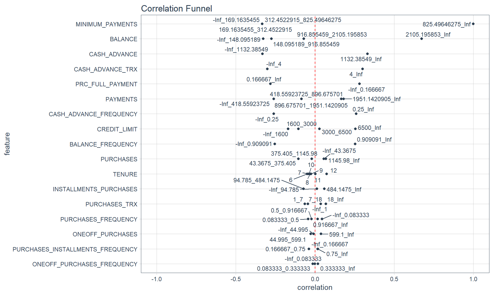
Linear Model (lm)
credit_card_tbl %>%
ggplot(aes(BALANCE, MINIMUM_PAYMENTS)) +
geom_point(alpha = 0.25) +
geom_smooth(method = "lm")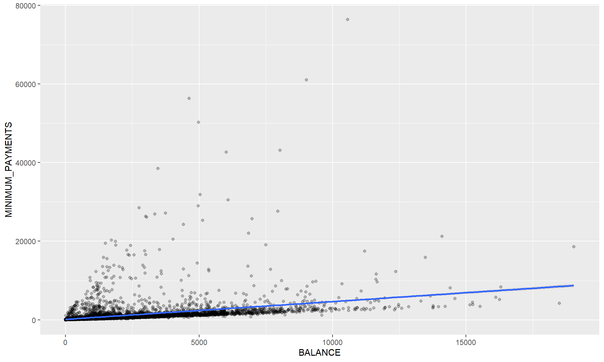
Credit Limit
Credit Limit has NA (missing data)
# Quantile
credit_card_tbl %>%
pull(CREDIT_LIMIT) %>%
quantile(na.rm = TRUE)## 0% 25% 50% 75% 100%
## 50 1600 3000 6500 30000Correlation Funnel
credit_card_no_missing_tbl %>%
binarize() %>%
correlate(target = CREDIT_LIMIT__6500_Inf) %>% # Largest credit limit bin
plot_correlation_funnel()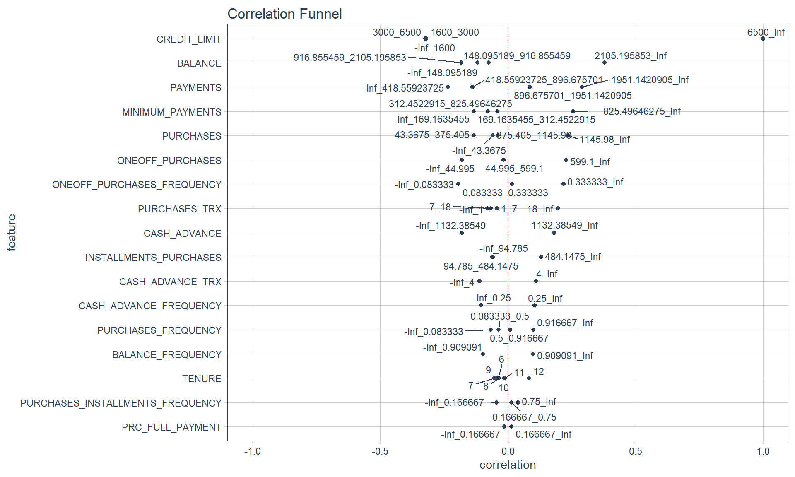
Linear Model (lm)
credit_card_tbl %>%
ggplot(aes(BALANCE, CREDIT_LIMIT)) +
geom_point(alpha = 0.25) +
geom_smooth(method = "lm")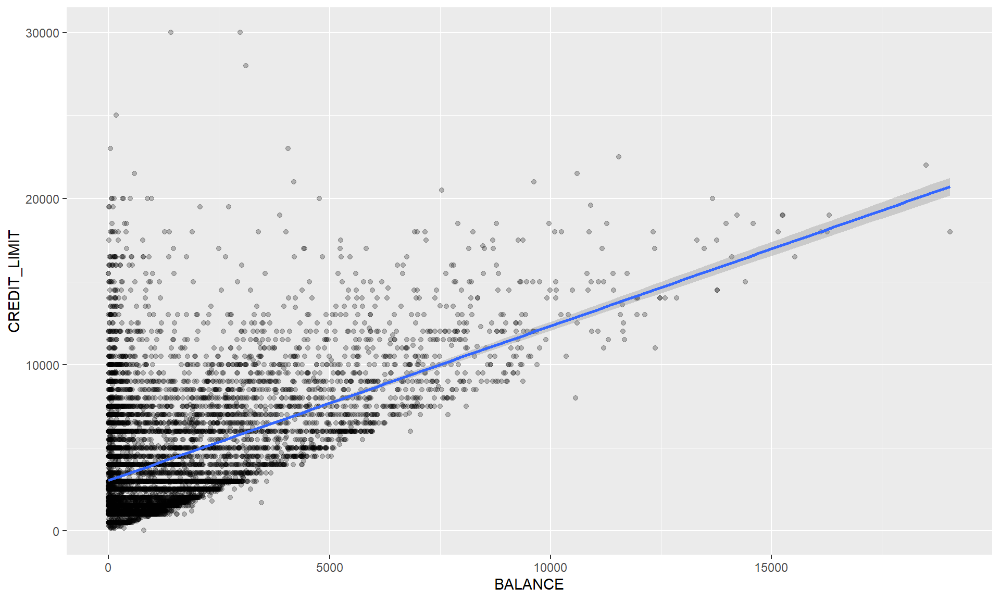
Pre-processing
Imputation and Standardized
rec_obj <- recipe(~ ., data = credit_card_tbl) %>%
# Random Forest Imputation
step_bagimpute(MINIMUM_PAYMENTS, CREDIT_LIMIT) %>%
# Scale & Center for relationship analysis
step_center(all_numeric()) %>%
step_scale(all_numeric()) %>%
prep()
train_tbl <- bake(rec_obj, new_data = credit_card_tbl)
train_tbl## # A tibble: 8,950 x 18
## CUST_ID BALANCE BALANCE_FREQUEN~ PURCHASES ONEOFF_PURCHASES INSTALLMENTS_PU~
## <fct> <dbl> <dbl> <dbl> <dbl> <dbl>
## 1 C10001 -0.732 -0.249 -0.425 -0.357 -0.349
## 2 C10002 0.787 0.134 -0.470 -0.357 -0.455
## 3 C10003 0.447 0.518 -0.108 0.109 -0.455
## 4 C10004 0.0491 -1.02 0.232 0.546 -0.455
## 5 C10005 -0.359 0.518 -0.462 -0.347 -0.455
## 6 C10006 0.118 0.518 0.154 -0.357 1.02
## 7 C10007 -0.450 0.518 2.85 3.50 0.307
## 8 C10008 0.125 0.518 -0.265 -0.357 0.0278
## 9 C10009 -0.264 0.518 -0.0663 0.0416 -0.233
## 10 C10010 -0.678 -1.40 0.130 0.415 -0.455
## # ... with 8,940 more rows, and 12 more variables: CASH_ADVANCE <dbl>,
## # PURCHASES_FREQUENCY <dbl>, ONEOFF_PURCHASES_FREQUENCY <dbl>,
## # PURCHASES_INSTALLMENTS_FREQUENCY <dbl>, CASH_ADVANCE_FREQUENCY <dbl>,
## # CASH_ADVANCE_TRX <dbl>, PURCHASES_TRX <dbl>, CREDIT_LIMIT <dbl>,
## # PAYMENTS <dbl>, MINIMUM_PAYMENTS <dbl>, PRC_FULL_PAYMENT <dbl>,
## # TENURE <dbl>Adjacency Matrix
To compare all features to see what customers correlate or related together.
customer_correlation_matrix <- train_tbl %>%
# Transpose data for customer similarity
gather(key = "FEATURE", value = "value", -CUST_ID, factor_key = TRUE) %>%
spread(key = CUST_ID, value = value) %>%
select(-FEATURE) %>%
# Adjacency Matrix - Perform Similarity using Correlation
as.matrix() %>%
cor()Customer Correlation Matrix
This is adjacency matrix that show how every customers are correlated against the other customers. Relationshiop Between Each Customers
customer_correlation_matrix %>% as_tibble(rownames = "CUST_ID")## # A tibble: 8,950 x 8,951
## CUST_ID C10001 C10002 C10003 C10004 C10005 C10006 C10007 C10008 C10009
## <chr> <dbl> <dbl> <dbl> <dbl> <dbl> <dbl> <dbl> <dbl> <dbl>
## 1 C10001 1 0.0842 -0.171 0.125 0.807 0.386 -0.193 0.0384 0.279
## 2 C10002 0.0842 1 -0.276 0.249 0.207 -0.360 -0.444 -0.469 0.0102
## 3 C10003 -0.171 -0.276 1 0.0913 0.0823 -0.156 0.292 -0.0332 0.266
## 4 C10004 0.125 0.249 0.0913 1 0.0420 -0.345 0.222 -0.496 0.464
## 5 C10005 0.807 0.207 0.0823 0.0420 1 0.269 -0.221 -0.0653 0.434
## 6 C10006 0.386 -0.360 -0.156 -0.345 0.269 1 -0.271 0.696 0.185
## 7 C10007 -0.193 -0.444 0.292 0.222 -0.221 -0.271 1 -0.0878 0.214
## 8 C10008 0.0384 -0.469 -0.0332 -0.496 -0.0653 0.696 -0.0878 1 0.125
## 9 C10009 0.279 0.0102 0.266 0.464 0.434 0.185 0.214 0.125 1
## 10 C10010 -0.0500 0.135 0.226 0.860 -0.168 -0.390 0.433 -0.440 0.508
## # ... with 8,940 more rows, and 8,941 more variables: C10010 <dbl>,
## # C10011 <dbl>, C10012 <dbl>, C10013 <dbl>, C10014 <dbl>, C10015 <dbl>,
## # C10016 <dbl>, C10017 <dbl>, C10018 <dbl>, C10019 <dbl>, C10020 <dbl>,
## # C10021 <dbl>, C10022 <dbl>, C10023 <dbl>, C10024 <dbl>, C10025 <dbl>,
## # C10026 <dbl>, C10027 <dbl>, C10028 <dbl>, C10029 <dbl>, C10030 <dbl>,
## # C10031 <dbl>, C10032 <dbl>, C10033 <dbl>, C10034 <dbl>, C10035 <dbl>,
## # C10036 <dbl>, C10037 <dbl>, C10038 <dbl>, C10039 <dbl>, C10040 <dbl>,
## # C10041 <dbl>, C10043 <dbl>, C10044 <dbl>, C10045 <dbl>, C10046 <dbl>,
## # C10047 <dbl>, C10048 <dbl>, C10049 <dbl>, C10050 <dbl>, C10051 <dbl>,
## # C10052 <dbl>, C10053 <dbl>, C10054 <dbl>, C10055 <dbl>, C10056 <dbl>,
## # C10057 <dbl>, C10058 <dbl>, C10059 <dbl>, C10060 <dbl>, C10061 <dbl>,
## # C10062 <dbl>, C10063 <dbl>, C10064 <dbl>, C10065 <dbl>, C10067 <dbl>,
## # C10068 <dbl>, C10069 <dbl>, C10070 <dbl>, C10071 <dbl>, C10072 <dbl>,
## # C10073 <dbl>, C10074 <dbl>, C10075 <dbl>, C10077 <dbl>, C10078 <dbl>,
## # C10079 <dbl>, C10080 <dbl>, C10081 <dbl>, C10082 <dbl>, C10083 <dbl>,
## # C10084 <dbl>, C10085 <dbl>, C10086 <dbl>, C10087 <dbl>, C10088 <dbl>,
## # C10089 <dbl>, C10090 <dbl>, C10092 <dbl>, C10093 <dbl>, C10094 <dbl>,
## # C10095 <dbl>, C10096 <dbl>, C10097 <dbl>, C10098 <dbl>, C10099 <dbl>,
## # C10100 <dbl>, C10101 <dbl>, C10102 <dbl>, C10103 <dbl>, C10104 <dbl>,
## # C10105 <dbl>, C10106 <dbl>, C10107 <dbl>, C10108 <dbl>, C10109 <dbl>,
## # C10110 <dbl>, C10111 <dbl>, C10112 <dbl>, C10113 <dbl>, ...Pruning The Adjacency Matrix

Remove duplicate relationships
customer_correlation_matrix[upper.tri(customer_correlation_matrix)] <- 0
customer_correlation_matrix %>% as_tibble(rownames = "CUST_ID")## # A tibble: 8,950 x 8,951
## CUST_ID C10001 C10002 C10003 C10004 C10005 C10006 C10007 C10008 C10009
## <chr> <dbl> <dbl> <dbl> <dbl> <dbl> <dbl> <dbl> <dbl> <dbl>
## 1 C10001 0 0 0 0 0 0 0 0 0
## 2 C10002 0.0842 0 0 0 0 0 0 0 0
## 3 C10003 -0.171 -0.276 0 0 0 0 0 0 0
## 4 C10004 0.125 0.249 0.0913 0 0 0 0 0 0
## 5 C10005 0.807 0.207 0.0823 0.0420 0 0 0 0 0
## 6 C10006 0.386 -0.360 -0.156 -0.345 0.269 0 0 0 0
## 7 C10007 -0.193 -0.444 0.292 0.222 -0.221 -0.271 0 0 0
## 8 C10008 0.0384 -0.469 -0.0332 -0.496 -0.0653 0.696 -0.0878 0 0
## 9 C10009 0.279 0.0102 0.266 0.464 0.434 0.185 0.214 0.125 0
## 10 C10010 -0.0500 0.135 0.226 0.860 -0.168 -0.390 0.433 -0.440 0.508
## # ... with 8,940 more rows, and 8,941 more variables: C10010 <dbl>,
## # C10011 <dbl>, C10012 <dbl>, C10013 <dbl>, C10014 <dbl>, C10015 <dbl>,
## # C10016 <dbl>, C10017 <dbl>, C10018 <dbl>, C10019 <dbl>, C10020 <dbl>,
## # C10021 <dbl>, C10022 <dbl>, C10023 <dbl>, C10024 <dbl>, C10025 <dbl>,
## # C10026 <dbl>, C10027 <dbl>, C10028 <dbl>, C10029 <dbl>, C10030 <dbl>,
## # C10031 <dbl>, C10032 <dbl>, C10033 <dbl>, C10034 <dbl>, C10035 <dbl>,
## # C10036 <dbl>, C10037 <dbl>, C10038 <dbl>, C10039 <dbl>, C10040 <dbl>,
## # C10041 <dbl>, C10043 <dbl>, C10044 <dbl>, C10045 <dbl>, C10046 <dbl>,
## # C10047 <dbl>, C10048 <dbl>, C10049 <dbl>, C10050 <dbl>, C10051 <dbl>,
## # C10052 <dbl>, C10053 <dbl>, C10054 <dbl>, C10055 <dbl>, C10056 <dbl>,
## # C10057 <dbl>, C10058 <dbl>, C10059 <dbl>, C10060 <dbl>, C10061 <dbl>,
## # C10062 <dbl>, C10063 <dbl>, C10064 <dbl>, C10065 <dbl>, C10067 <dbl>,
## # C10068 <dbl>, C10069 <dbl>, C10070 <dbl>, C10071 <dbl>, C10072 <dbl>,
## # C10073 <dbl>, C10074 <dbl>, C10075 <dbl>, C10077 <dbl>, C10078 <dbl>,
## # C10079 <dbl>, C10080 <dbl>, C10081 <dbl>, C10082 <dbl>, C10083 <dbl>,
## # C10084 <dbl>, C10085 <dbl>, C10086 <dbl>, C10087 <dbl>, C10088 <dbl>,
## # C10089 <dbl>, C10090 <dbl>, C10092 <dbl>, C10093 <dbl>, C10094 <dbl>,
## # C10095 <dbl>, C10096 <dbl>, C10097 <dbl>, C10098 <dbl>, C10099 <dbl>,
## # C10100 <dbl>, C10101 <dbl>, C10102 <dbl>, C10103 <dbl>, C10104 <dbl>,
## # C10105 <dbl>, C10106 <dbl>, C10107 <dbl>, C10108 <dbl>, C10109 <dbl>,
## # C10110 <dbl>, C10111 <dbl>, C10112 <dbl>, C10113 <dbl>, ...Prune relationships
Subsets of most influential customers.
edge_limit <- 0.99 # Below 0.99 gets zero values
customer_correlation_matrix[customer_correlation_matrix < edge_limit] <- 0
customer_correlation_matrix %>% as_tibble(rownames = "CUST_ID")## # A tibble: 8,950 x 8,951
## CUST_ID C10001 C10002 C10003 C10004 C10005 C10006 C10007 C10008 C10009 C10010
## <chr> <dbl> <dbl> <dbl> <dbl> <dbl> <dbl> <dbl> <dbl> <dbl> <dbl>
## 1 C10001 0 0 0 0 0 0 0 0 0 0
## 2 C10002 0 0 0 0 0 0 0 0 0 0
## 3 C10003 0 0 0 0 0 0 0 0 0 0
## 4 C10004 0 0 0 0 0 0 0 0 0 0
## 5 C10005 0 0 0 0 0 0 0 0 0 0
## 6 C10006 0 0 0 0 0 0 0 0 0 0
## 7 C10007 0 0 0 0 0 0 0 0 0 0
## 8 C10008 0 0 0 0 0 0 0 0 0 0
## 9 C10009 0 0 0 0 0 0 0 0 0 0
## 10 C10010 0 0 0 0 0 0 0 0 0 0
## # ... with 8,940 more rows, and 8,940 more variables: C10011 <dbl>,
## # C10012 <dbl>, C10013 <dbl>, C10014 <dbl>, C10015 <dbl>, C10016 <dbl>,
## # C10017 <dbl>, C10018 <dbl>, C10019 <dbl>, C10020 <dbl>, C10021 <dbl>,
## # C10022 <dbl>, C10023 <dbl>, C10024 <dbl>, C10025 <dbl>, C10026 <dbl>,
## # C10027 <dbl>, C10028 <dbl>, C10029 <dbl>, C10030 <dbl>, C10031 <dbl>,
## # C10032 <dbl>, C10033 <dbl>, C10034 <dbl>, C10035 <dbl>, C10036 <dbl>,
## # C10037 <dbl>, C10038 <dbl>, C10039 <dbl>, C10040 <dbl>, C10041 <dbl>,
## # C10043 <dbl>, C10044 <dbl>, C10045 <dbl>, C10046 <dbl>, C10047 <dbl>,
## # C10048 <dbl>, C10049 <dbl>, C10050 <dbl>, C10051 <dbl>, C10052 <dbl>,
## # C10053 <dbl>, C10054 <dbl>, C10055 <dbl>, C10056 <dbl>, C10057 <dbl>,
## # C10058 <dbl>, C10059 <dbl>, C10060 <dbl>, C10061 <dbl>, C10062 <dbl>,
## # C10063 <dbl>, C10064 <dbl>, C10065 <dbl>, C10067 <dbl>, C10068 <dbl>,
## # C10069 <dbl>, C10070 <dbl>, C10071 <dbl>, C10072 <dbl>, C10073 <dbl>,
## # C10074 <dbl>, C10075 <dbl>, C10077 <dbl>, C10078 <dbl>, C10079 <dbl>,
## # C10080 <dbl>, C10081 <dbl>, C10082 <dbl>, C10083 <dbl>, C10084 <dbl>,
## # C10085 <dbl>, C10086 <dbl>, C10087 <dbl>, C10088 <dbl>, C10089 <dbl>,
## # C10090 <dbl>, C10092 <dbl>, C10093 <dbl>, C10094 <dbl>, C10095 <dbl>,
## # C10096 <dbl>, C10097 <dbl>, C10098 <dbl>, C10099 <dbl>, C10100 <dbl>,
## # C10101 <dbl>, C10102 <dbl>, C10103 <dbl>, C10104 <dbl>, C10105 <dbl>,
## # C10106 <dbl>, C10107 <dbl>, C10108 <dbl>, C10109 <dbl>, C10110 <dbl>,
## # C10111 <dbl>, C10112 <dbl>, C10113 <dbl>, C10114 <dbl>, ...sum(customer_correlation_matrix > 0)## [1] 10703Filter relationships to subset of customers that have relationships
customer_correlation_matrix <- customer_correlation_matrix[rowSums(customer_correlation_matrix) > 0, colSums(customer_correlation_matrix) > 0]
customer_correlation_matrix %>% dim()## [1] 1992 1991customer_correlation_matrix %>% as_tibble(rownames = "CUST_ID")## # A tibble: 1,992 x 1,992
## CUST_ID C10003 C10005 C10008 C10011 C10015 C10017 C10021 C10026 C10027 C10028
## <chr> <dbl> <dbl> <dbl> <dbl> <dbl> <dbl> <dbl> <dbl> <dbl> <dbl>
## 1 C10102 0 0 0 0 0 0 0 0 0 0
## 2 C10166 0 0 0 0 0 0 0 0 0 0
## 3 C10174 0 0 0 0.997 0 0 0 0 0 0
## 4 C10213 0 0 0 0 0 0 0 0 0 0
## 5 C10256 0 0 0 0 0 0 0 0 0 0.996
## 6 C10278 0.996 0 0 0 0 0 0 0 0 0
## 7 C10300 0 0 0 0 0 0 0 0 0 0
## 8 C10321 0 0 0 0 0 0 0 0 0 0
## 9 C10371 0 0 0 0 0 0 0 0 0 0
## 10 C10391 0 0 0 0 0 0 0 0 0 0
## # ... with 1,982 more rows, and 1,981 more variables: C10034 <dbl>,
## # C10036 <dbl>, C10044 <dbl>, C10045 <dbl>, C10049 <dbl>, C10050 <dbl>,
## # C10054 <dbl>, C10063 <dbl>, C10065 <dbl>, C10069 <dbl>, C10070 <dbl>,
## # C10082 <dbl>, C10087 <dbl>, C10089 <dbl>, C10093 <dbl>, C10094 <dbl>,
## # C10097 <dbl>, C10100 <dbl>, C10103 <dbl>, C10104 <dbl>, C10109 <dbl>,
## # C10111 <dbl>, C10112 <dbl>, C10118 <dbl>, C10123 <dbl>, C10124 <dbl>,
## # C10128 <dbl>, C10134 <dbl>, C10138 <dbl>, C10140 <dbl>, C10158 <dbl>,
## # C10165 <dbl>, C10166 <dbl>, C10167 <dbl>, C10170 <dbl>, C10171 <dbl>,
## # C10174 <dbl>, C10181 <dbl>, C10187 <dbl>, C10189 <dbl>, C10197 <dbl>,
## # C10198 <dbl>, C10207 <dbl>, C10209 <dbl>, C10213 <dbl>, C10223 <dbl>,
## # C10234 <dbl>, C10239 <dbl>, C10242 <dbl>, C10244 <dbl>, C10256 <dbl>,
## # C10257 <dbl>, C10260 <dbl>, C10263 <dbl>, C10286 <dbl>, C10287 <dbl>,
## # C10288 <dbl>, C10297 <dbl>, C10300 <dbl>, C10304 <dbl>, C10305 <dbl>,
## # C10309 <dbl>, C10321 <dbl>, C10324 <dbl>, C10327 <dbl>, C10328 <dbl>,
## # C10329 <dbl>, C10330 <dbl>, C10333 <dbl>, C10334 <dbl>, C10336 <dbl>,
## # C10338 <dbl>, C10341 <dbl>, C10347 <dbl>, C10349 <dbl>, C10357 <dbl>,
## # C10360 <dbl>, C10361 <dbl>, C10365 <dbl>, C10371 <dbl>, C10373 <dbl>,
## # C10380 <dbl>, C10384 <dbl>, C10386 <dbl>, C10391 <dbl>, C10396 <dbl>,
## # C10399 <dbl>, C10400 <dbl>, C10402 <dbl>, C10409 <dbl>, C10415 <dbl>,
## # C10422 <dbl>, C10429 <dbl>, C10436 <dbl>, C10443 <dbl>, C10444 <dbl>,
## # C10445 <dbl>, C10454 <dbl>, C10463 <dbl>, C10466 <dbl>, ...Convert to Long Tibble with From & To Column Relating Customers
customer_relationship_tbl <- customer_correlation_matrix %>%
as_tibble(rownames = "from") %>%
gather(key = "to", value = "weight", -from) %>%
filter(weight > 0)
customer_relationship_tbl## # A tibble: 10,703 x 3
## from to weight
## <chr> <chr> <dbl>
## 1 C10278 C10003 0.996
## 2 C10962 C10005 0.991
## 3 C11104 C10005 0.992
## 4 C12740 C10005 0.991
## 5 C13779 C10005 0.990
## 6 C14513 C10005 0.995
## 7 C14737 C10005 0.994
## 8 C15919 C10005 0.993
## 9 C16180 C10005 0.997
## 10 C16961 C10005 0.994
## # ... with 10,693 more rowsConvert to Function for Dynamic Filtering of Edge Limit
prep_corr_matrix_for_tbl_graph <- function(correlation_matrix, edge_limit = 0.9999) {
diag(correlation_matrix) <- 0
correlation_matrix[upper.tri(correlation_matrix)] <- 0
correlation_matrix[correlation_matrix < edge_limit] <- 0
correlation_matrix <- correlation_matrix[rowSums(correlation_matrix) > 0, colSums(correlation_matrix) > 0]
correlation_matrix %>%
as_tibble(rownames = "from") %>%
gather(key = "to", value = "weight", -from) %>%
filter(weight > 0)
}
prep_corr_matrix_for_tbl_graph(customer_correlation_matrix, edge_limit = 0.99)## # A tibble: 7,178 x 3
## from to weight
## <chr> <chr> <dbl>
## 1 C10278 C10003 0.996
## 2 C10962 C10005 0.991
## 3 C11104 C10005 0.992
## 4 C12740 C10005 0.991
## 5 C13779 C10005 0.990
## 6 C14513 C10005 0.995
## 7 C14737 C10005 0.994
## 8 C15919 C10005 0.993
## 9 C16180 C10005 0.997
## 10 C16961 C10005 0.994
## # ... with 7,168 more rowsNetwork Visualization
customer_correlation_matrix %>%
prep_corr_matrix_for_tbl_graph(edge_limit = 0.997) %>%
as_tbl_graph(directed = FALSE) %>%
ggraph(layout = "kk") +
geom_edge_link(alpha = 0.5, color = palette_light()["blue"]) +
geom_node_point(alpha = 0.5, color = palette_light()["blue"]) +
theme_graph(background = "white")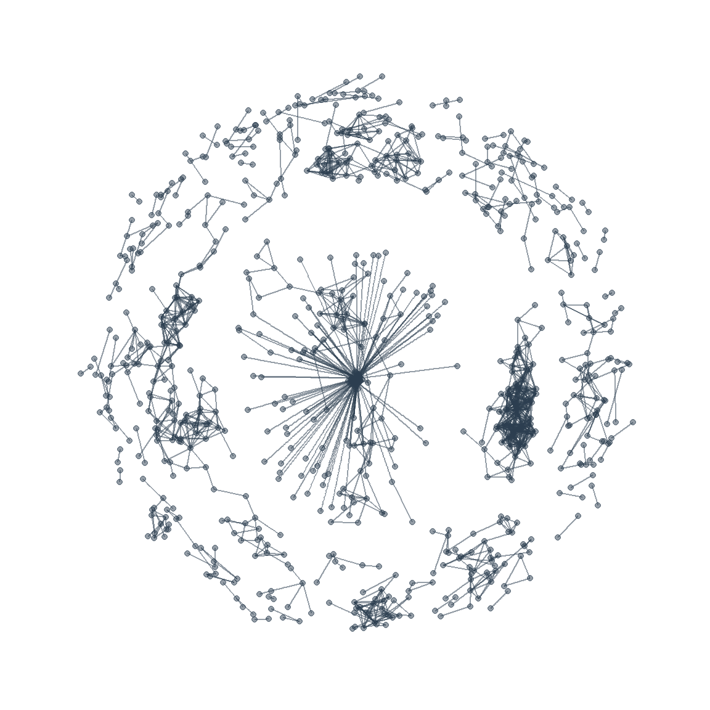
Nodes and Edges

Graph Manipulation
customer_tbl_graph <- customer_correlation_matrix %>%
prep_corr_matrix_for_tbl_graph(edge_limit = 0.997) %>%
as_tbl_graph(directed = FALSE)
customer_tbl_graph## # A tbl_graph: 890 nodes and 1502 edges
## #
## # An undirected simple graph with 213 components
## #
## # Node Data: 890 x 1 (active)
## name
## <chr>
## 1 C16180
## 2 C17657
## 3 C14958
## 4 C11181
## 5 C12206
## 6 C13649
## # ... with 884 more rows
## #
## # Edge Data: 1,502 x 3
## from to weight
## <int> <int> <dbl>
## 1 1 543 0.997
## 2 2 543 0.998
## 3 3 544 0.999
## # ... with 1,499 more rowsRanking Nodes - Rank by topological traits (Find out which customers are the most important vs the other customers)
customer_tbl_graph %>%
activate(nodes) %>%
mutate(node_rank = node_rank_traveller()) %>%
arrange(node_rank)## # A tbl_graph: 890 nodes and 1502 edges
## #
## # An undirected simple graph with 213 components
## #
## # Node Data: 890 x 2 (active)
## name node_rank
## <chr> <int>
## 1 C14001 1
## 2 C10045 2
## 3 C16928 3
## 4 C18807 4
## 5 C16688 5
## 6 C13730 6
## # ... with 884 more rows
## #
## # Edge Data: 1,502 x 3
## from to weight
## <int> <int> <dbl>
## 1 681 682 0.997
## 2 680 681 0.998
## 3 357 358 0.999
## # ... with 1,499 more rowsCentrality - Number of edges going in/out of node (The node with highest number of edges is the most important)
customer_tbl_graph %>%
activate(nodes) %>%
mutate(neighbors = centrality_degree()) %>%
arrange(desc(neighbors))## # A tbl_graph: 890 nodes and 1502 edges
## #
## # An undirected simple graph with 213 components
## #
## # Node Data: 890 x 2 (active)
## name neighbors
## <chr> <dbl>
## 1 C18341 37
## 2 C18363 26
## 3 C18811 25
## 4 C18913 25
## 5 C18271 24
## 6 C16626 23
## # ... with 884 more rows
## #
## # Edge Data: 1,502 x 3
## from to weight
## <int> <int> <dbl>
## 1 241 402 0.997
## 2 242 402 0.998
## 3 470 688 0.999
## # ... with 1,499 more rowsGrouping Nodes (Clustering)
grouped_tbl_graph <- customer_tbl_graph %>%
activate(nodes) %>%
mutate(neighbors = centrality_degree()) %>%
mutate(group = group_components()) %>%
arrange(desc(neighbors)) %>%
mutate(group_lump = group %>% as_factor() %>% fct_lump(n = 5))
grouped_tbl_graph %>%
ggraph(layout = "kk") +
geom_edge_link(alpha = 0.5) +
geom_node_point(aes(color = group_lump), alpha = 0.5, size = 3) +
theme_graph() +
scale_color_tq(theme = "light") +
theme(legend.position = "bottom") +
labs(title = "Customer Network Detection")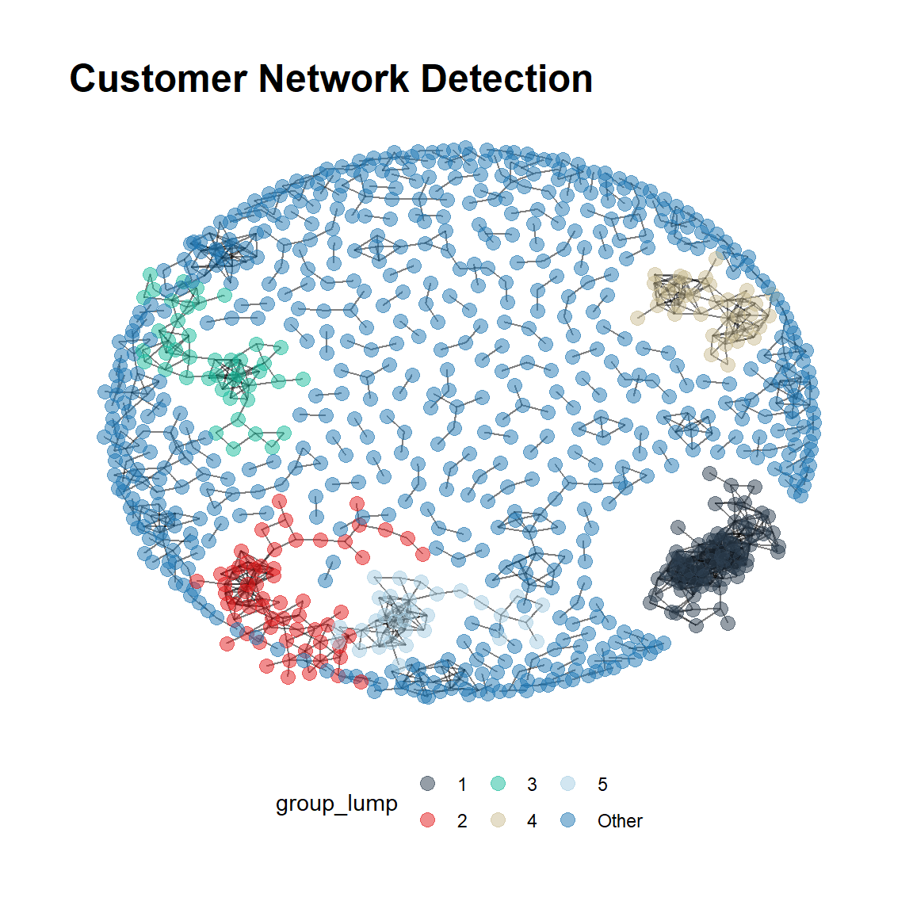
Community Analysis
Join Communities and Inspect Key Features
credit_card_group_tbl <- credit_card_tbl %>%
left_join(as_tibble(grouped_tbl_graph), by = c("CUST_ID" = "name")) %>%
select(group_lump, CUST_ID, everything()) %>%
filter(!is.na(group_lump))
credit_card_group_tbl %>% glimpse()## Rows: 890
## Columns: 21
## $ group_lump <fct> Other, Other, Other, 2, 2, 1, Othe...
## $ CUST_ID <chr> "C10005", "C10011", "C10015", "C10...
## $ BALANCE <dbl> 817.714335, 1293.124939, 2772.7727...
## $ BALANCE_FREQUENCY <dbl> 1.000000, 1.000000, 1.000000, 1.00...
## $ PURCHASES <dbl> 16.00, 920.12, 0.00, 399.60, 233.2...
## $ ONEOFF_PURCHASES <dbl> 16.00, 0.00, 0.00, 0.00, 0.00, 0.0...
## $ INSTALLMENTS_PURCHASES <dbl> 0.00, 920.12, 0.00, 399.60, 233.28...
## $ CASH_ADVANCE <dbl> 0.00000, 0.00000, 346.81139, 0.000...
## $ PURCHASES_FREQUENCY <dbl> 0.083333, 1.000000, 0.000000, 1.00...
## $ ONEOFF_PURCHASES_FREQUENCY <dbl> 0.083333, 0.000000, 0.000000, 0.00...
## $ PURCHASES_INSTALLMENTS_FREQUENCY <dbl> 0.000000, 1.000000, 0.000000, 1.00...
## $ CASH_ADVANCE_FREQUENCY <dbl> 0.000000, 0.000000, 0.083333, 0.00...
## $ CASH_ADVANCE_TRX <dbl> 0, 0, 1, 0, 0, 1, 1, 0, 1, 1, 0, 4...
## $ PURCHASES_TRX <dbl> 1, 12, 0, 12, 12, 0, 0, 1, 0, 0, 3...
## $ CREDIT_LIMIT <dbl> 1200, 1200, 3000, 3000, 1000, 1800...
## $ PAYMENTS <dbl> 678.33476, 1083.30101, 805.64797, ...
## $ MINIMUM_PAYMENTS <dbl> 244.79124, 2172.69776, 989.96287, ...
## $ PRC_FULL_PAYMENT <dbl> 0.000000, 0.000000, 0.000000, 0.00...
## $ TENURE <dbl> 12, 12, 12, 12, 12, 12, 12, 12, 8,...
## $ neighbors <dbl> 2, 1, 5, 3, 17, 15, 1, 2, 1, 2, 1,...
## $ group <int> 9, 84, 12, 2, 2, 1, 85, 6, 86, 41,...plot_density_by <- function(data, col, group_focus = 1, ncol = 1) {
col_expr <- enquo(col)
data %>%
mutate(focus = as.character(group_lump)) %>%
select(focus, everything()) %>%
mutate(focus = ifelse(as.character(focus) == as.character(group_focus),
"1", "Other")) %>%
mutate(focus = as.factor(focus)) %>%
ggplot(aes(!! col_expr, fill = focus)) +
geom_density(alpha = 0.4) +
facet_wrap(~ focus, ncol = ncol) +
scale_fill_tq() +
theme_tq()
}Group 1.
By Balance
For this first group we can see that every customers has bimodal and trimodal relationships but you can see that for group 1 everyone has pretty high balance compare to the spike vs the other. This categorizes the group 1 as they tend to have a higher balance.
credit_card_group_tbl %>% plot_density_by(BALANCE, group_focus = 1)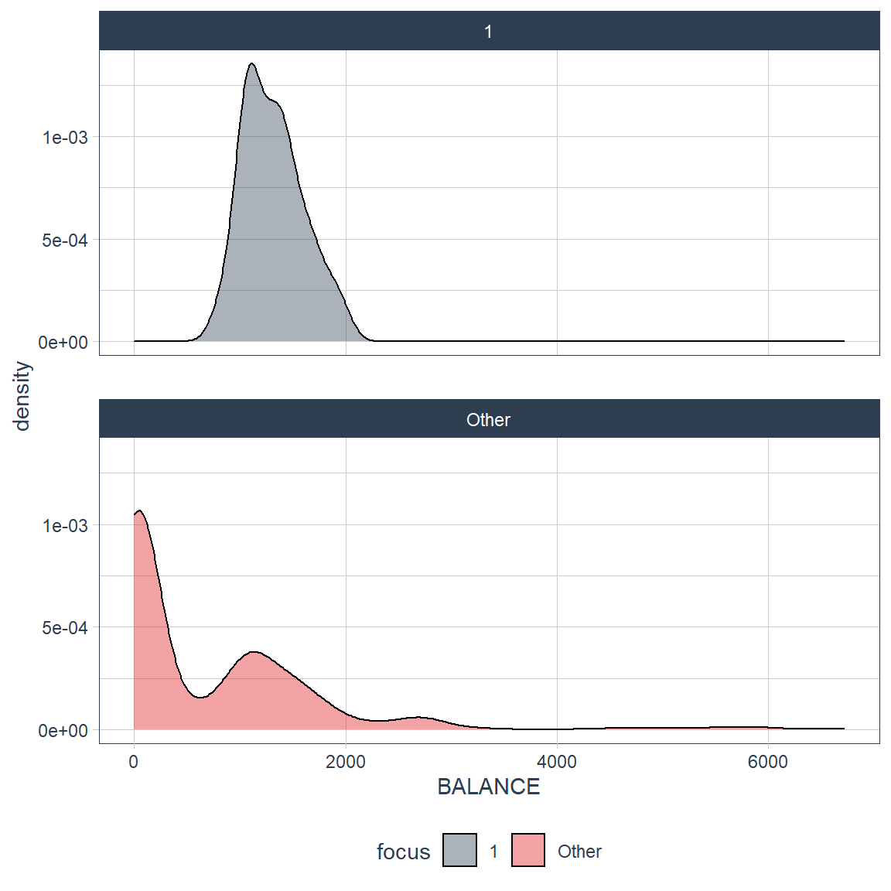
By Min Payment
credit_card_group_tbl %>% plot_density_by(MINIMUM_PAYMENTS, group_focus = 1)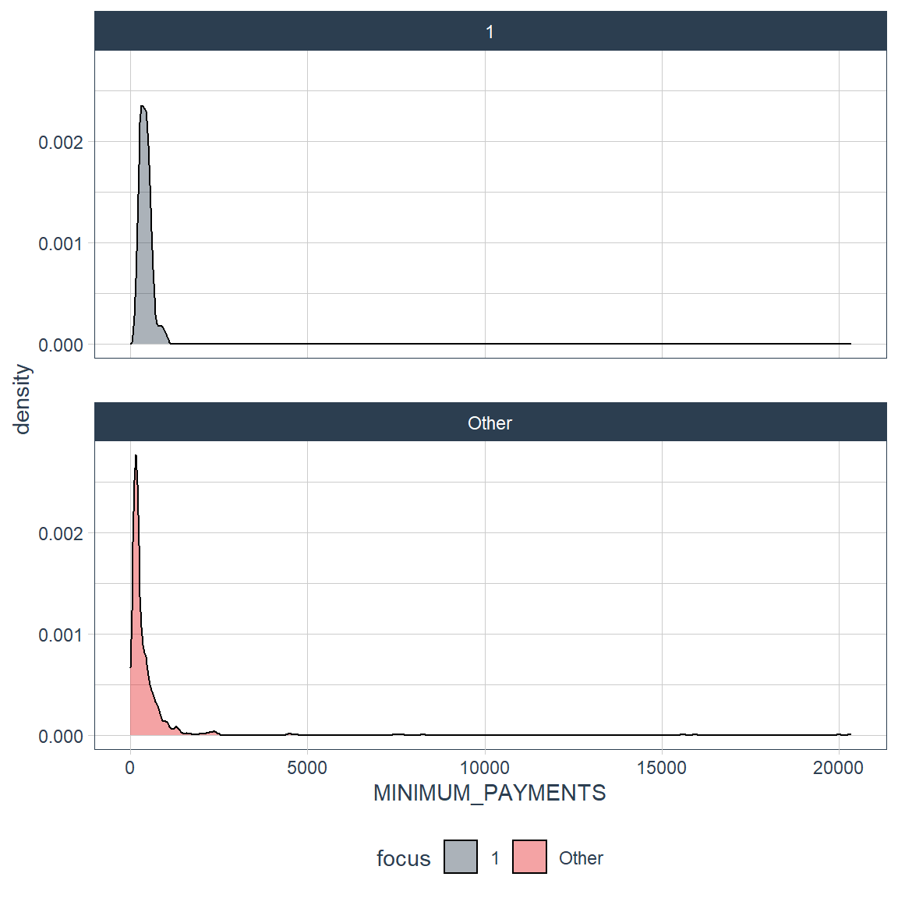
credit_card_group_tbl %>% plot_density_by(log(MINIMUM_PAYMENTS), group_focus = 1)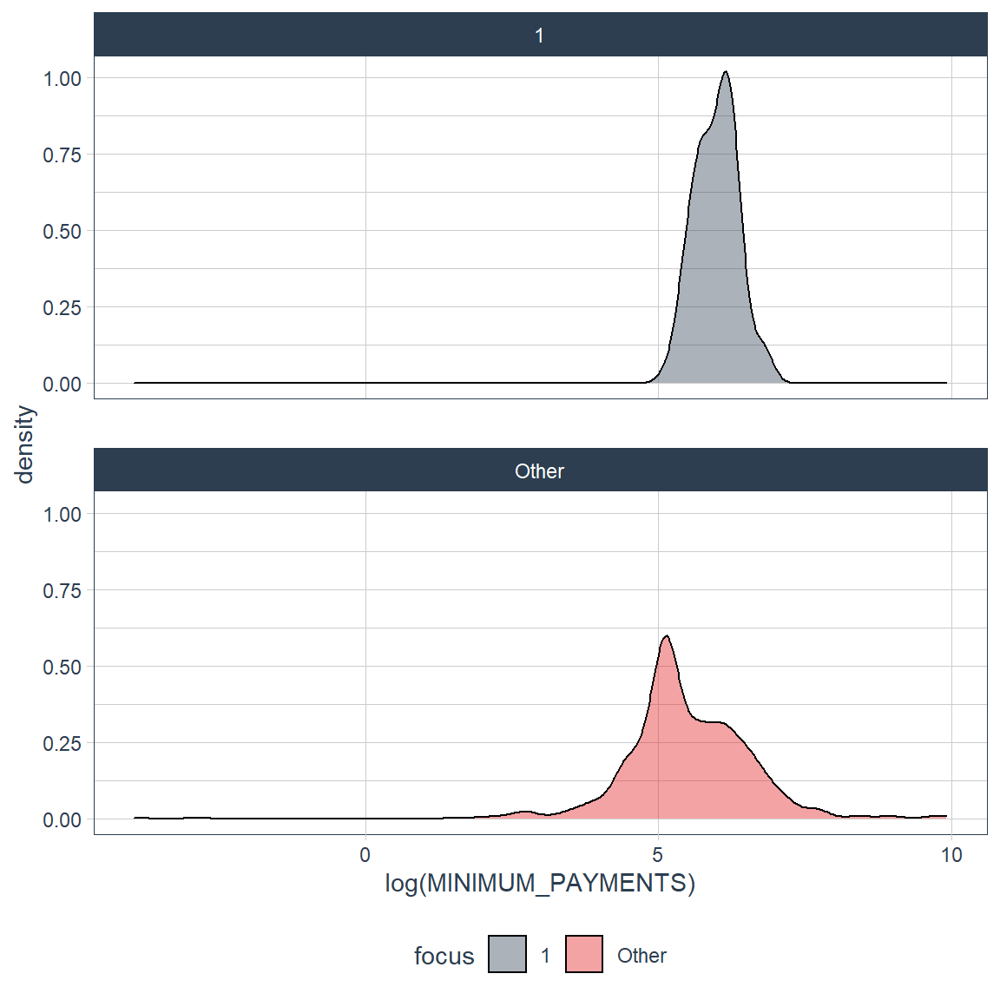
Cash Advance Frequency
credit_card_group_tbl %>% plot_density_by(CASH_ADVANCE_FREQUENCY, group_focus = 1)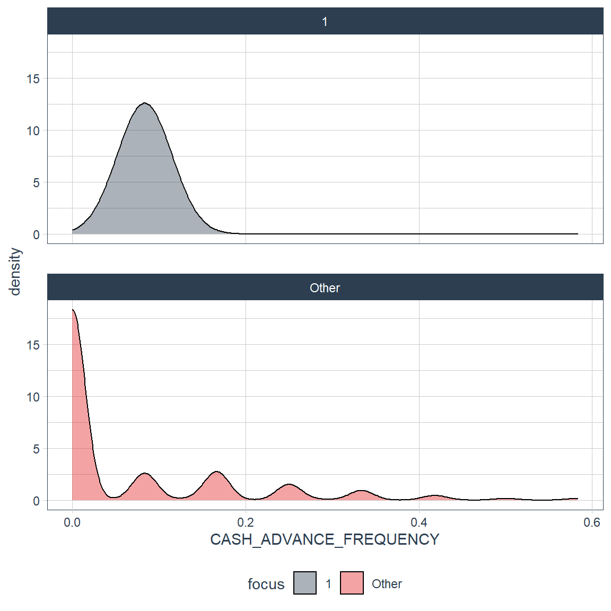
Group 2
By Balance
credit_card_group_tbl %>% plot_density_by(BALANCE, group_focus = 2, ncol = 1)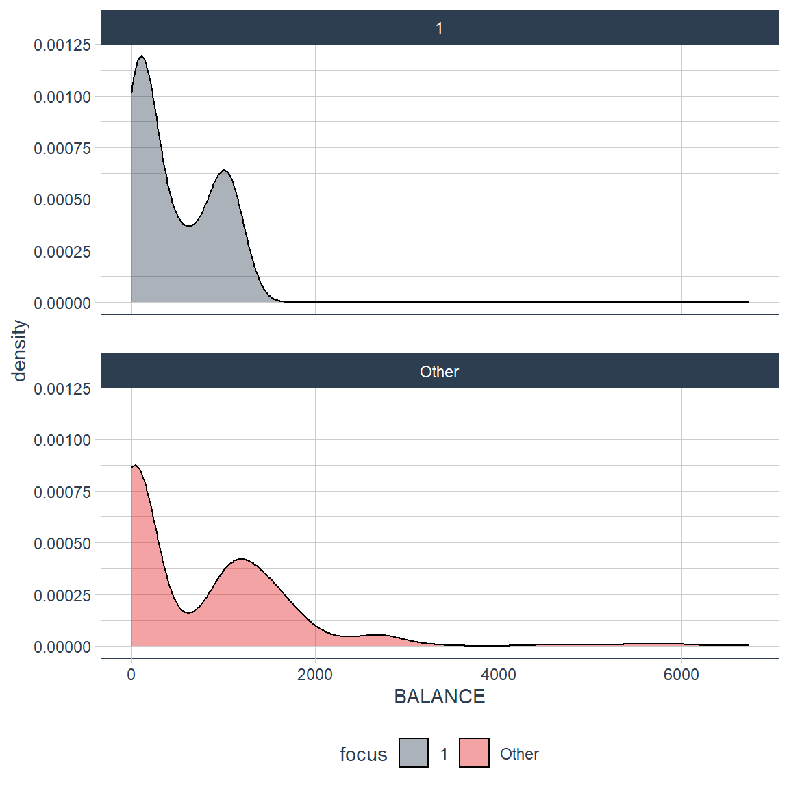
credit_card_group_tbl %>% plot_density_by(log(BALANCE), group_focus = 2, ncol = 1)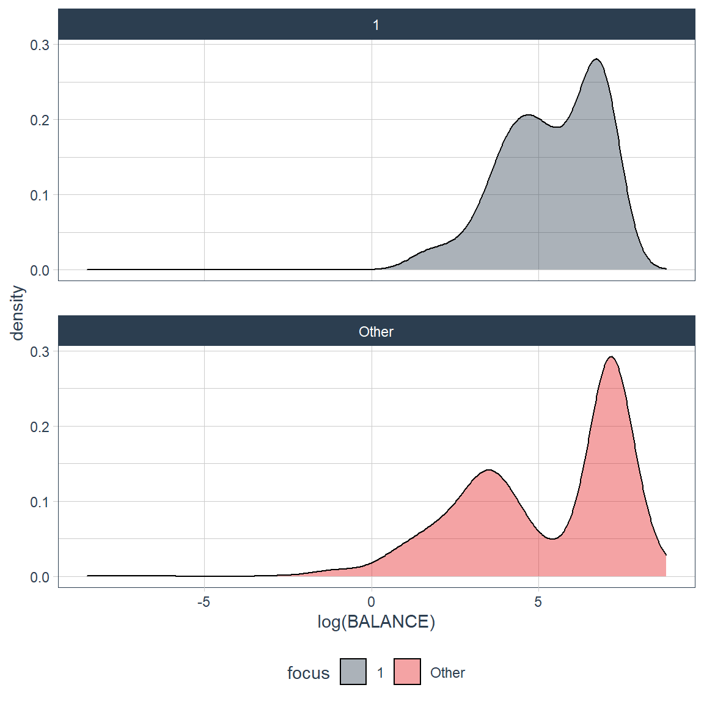
By Min Payment
credit_card_group_tbl %>% plot_density_by(MINIMUM_PAYMENTS, group_focus = 2)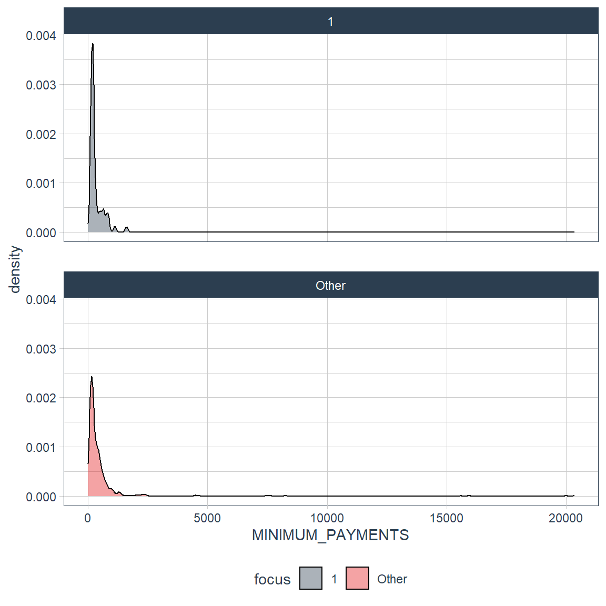
credit_card_group_tbl %>% plot_density_by(log(MINIMUM_PAYMENTS), group_focus = 2)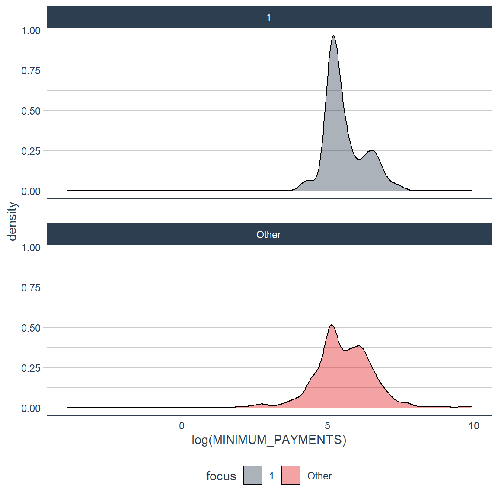
Cash Advance Frequency
credit_card_group_tbl %>% plot_density_by(CASH_ADVANCE_FREQUENCY, group_focus = 2)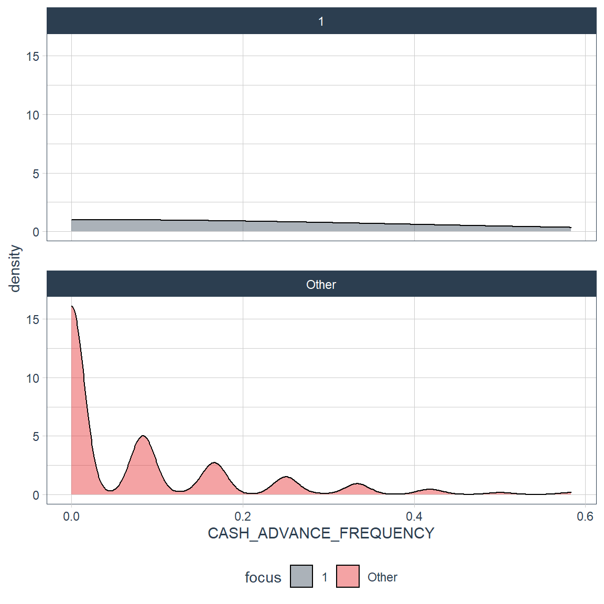
H2O and LIME
Predict and Explain Customer Segments.
H2O -Multi-class prediction with H2O AutoML -Training a model to detect which group each customer belongs to which group. LIME Explanation -ML Explanation of which features contribute to each class with LIME -Returns a function called explain_customer()
source("h2o_lime.R")##
## H2O is not running yet, starting it now...
##
## Note: In case of errors look at the following log files:
## C:\Users\Apple\AppData\Local\Temp\RtmpyKhEA7\filea7c74154fc9/h2o_Apple_started_from_r.out
## C:\Users\Apple\AppData\Local\Temp\RtmpyKhEA7\filea7c36525d49/h2o_Apple_started_from_r.err
##
##
## Starting H2O JVM and connecting: ... Connection successful!
##
## R is connected to the H2O cluster:
## H2O cluster uptime: 19 seconds 271 milliseconds
## H2O cluster timezone: Asia/Singapore
## H2O data parsing timezone: UTC
## H2O cluster version: 3.30.1.3
## H2O cluster version age: 5 months and 15 days !!!
## H2O cluster name: H2O_started_from_R_Apple_rqh772
## H2O cluster total nodes: 1
## H2O cluster total memory: 1.96 GB
## H2O cluster total cores: 4
## H2O cluster allowed cores: 4
## H2O cluster healthy: TRUE
## H2O Connection ip: localhost
## H2O Connection port: 54321
## H2O Connection proxy: NA
## H2O Internal Security: FALSE
## H2O API Extensions: Amazon S3, Algos, AutoML, Core V3, TargetEncoder, Core V4
## R Version: R version 4.0.2 (2020-06-22)
##
##
|
| | 0%
|
|======================================================================| 100%
##
|
| | 0%
|
|= | 1%
|
|================================================================== | 95%
|
|======================================================================| 100%credit_card_group_tbl## # A tibble: 890 x 21
## group_lump CUST_ID BALANCE BALANCE_FREQUEN~ PURCHASES ONEOFF_PURCHASES
## <fct> <chr> <dbl> <dbl> <dbl> <dbl>
## 1 Other C10005 818. 1 16 16
## 2 Other C10011 1293. 1 920. 0
## 3 Other C10015 2773. 1 0 0
## 4 2 C10026 170. 1 400. 0
## 5 2 C10028 126. 1 233. 0
## 6 1 C10036 1656. 1 0 0
## 7 Other C10045 1361. 1 0 0
## 8 Other C10063 1556. 1 66.2 66.2
## 9 Other C10069 810. 0.875 0 0
## 10 Other C10082 1206. 1 0 0
## # ... with 880 more rows, and 15 more variables: INSTALLMENTS_PURCHASES <dbl>,
## # CASH_ADVANCE <dbl>, PURCHASES_FREQUENCY <dbl>,
## # ONEOFF_PURCHASES_FREQUENCY <dbl>, PURCHASES_INSTALLMENTS_FREQUENCY <dbl>,
## # CASH_ADVANCE_FREQUENCY <dbl>, CASH_ADVANCE_TRX <dbl>, PURCHASES_TRX <dbl>,
## # CREDIT_LIMIT <dbl>, PAYMENTS <dbl>, MINIMUM_PAYMENTS <dbl>,
## # PRC_FULL_PAYMENT <dbl>, TENURE <dbl>, neighbors <dbl>, group <int>h2o.predict(h2o_model, newdata = as.h2o(credit_card_group_tbl)) %>%
as_tibble()##
|
| | 0%
|
|======================================================================| 100%
##
|
| | 0%
|
|======================================================================| 100%## # A tibble: 890 x 7
## predict p1 p2 p3 p4 p5 Other
## <fct> <dbl> <dbl> <dbl> <dbl> <dbl> <dbl>
## 1 Other 0 0.000101 0.0000782 0 0.000428 0.999
## 2 Other 0 0 0.0000782 0 0 1.00
## 3 Other 0.0226 0.0000985 0.0000764 0 0.000419 0.977
## 4 2 0 0.944 0.0000782 0 0 0.0556
## 5 2 0 1.00 0.0000782 0 0.000262 0
## 6 1 0.998 0.000102 0.0000788 0 0.000432 0.00124
## 7 Other 0.0999 0.0000907 0.0000704 0 0.000385 0.900
## 8 Other 0 0.000101 0 0 0.000428 0.999
## 9 Other 0.0526 0.0000955 0.0000741 0 0.000406 0.947
## 10 Other 0.136 0.0000871 0.0000676 0 0.000370 0.864
## # ... with 880 more rowsExplain why customers 6 belong to communities.
explain_customer(6)##
|
| | 0%
|
|======================================================================| 100%
##
|
| | 0%
|
|======================================================================| 100%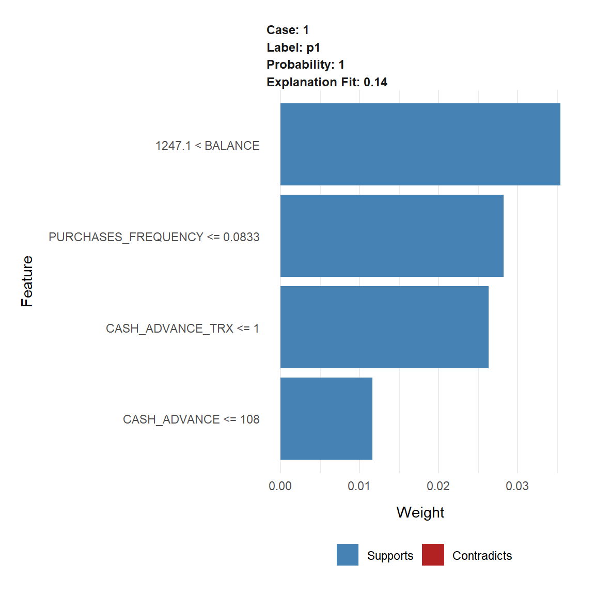